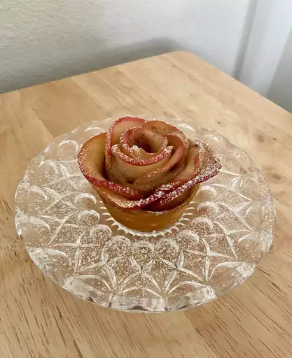

Baked Apple Roses

Description
I hope you give these gorgeous-looking and very delicious apple roses a try soon. Enjoy!
INGREDIENTS
- 1 large red apple, cored and very thinly sliced
- One fourth cup white sugar
- 1 teaspoon ground cinnamon
- 1 sheet frozen puff pastry, thawed
- One fourth cup melted butter
- 1 large egg
- 2 teaspoons water
- 1 teaspoon confectioners' sugar (Optional)
STEPS
- Preheat the oven to 400 degrees F (200 degrees C). Adjust an oven rack to the middle position. Butter two (6 to 8-ounce) ramekins and dust with white sugar.
- Place apple slices on a microwave-safe plate, overlapping slightly if necessary. Microwave on high until slices slightly soften, about 45 seconds. Cover the plate with plastic wrap and a kitchen towel.
- Mix together sugar and cinnamon in a small bowl.
- Roll puff pastry sheet to less than 1/8-inch thickness. Using a pizza cutter, cut two (3x12-inch) rectangles. Reserve remaining pieces for another use.
- Spread melted butter over dough; sprinkle with a generous amount of cinnamon sugar. Place apple slices along one long edge of dough, about 1/4 inch beyond the edge, overlapping slices slightly. Fold the bottom half of dough over apple slices to form a long "folder" of dough with rounded edges of apple slices exposed.
- Bake